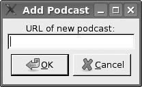

{% include JB/setup %}
{% raw %}
<div>

    <a name="toppage" class="calibre5" id="toppage"></a>
    <table width="100%" border="0" cellspacing="0" cellpadding="0" class="sfbody">
      <tr valign="top" class="calibre6">
        <td class="calibre7">
          <a name="MainContent" class="calibre5" id="MainContent"></a>
          <table width="95%" class="sfbody">
            <tr class="calibre6">
              <td class="v">
                <!--Copyright (c) 2002 Safari Tech Books Online-->
                <table width="100%" border="0" cellspacing="0" cellpadding="2" class="sfbody">
                  <tr class="calibre6">
                    <td valign="middle" class="v1" height="5">
                      
                    </td>
                  </tr>
                  <tr class="calibre6">
                    <td valign="middle" class="v1">
                      <table cellpadding="0" cellspacing="0" border="0" width="100%" class="sfbody">
                        <tr class="calibre6">
                          <td class="v"><span class="calibre9"> </span>
                   
                  <span class="calibre9">   </span>
             <span class="calibre9"> </span></td>
                        </tr>
                      </table>
                    </td>
                    <td class="v1"/>
                    <td valign="middle" class="v2"> 
           
          <span class="calibre9"><a target="_self" href="gui_init.html" title="Previous section" class="calibre13"></a></span>
				
				 
				
				<span class="calibre9"><a target="_self" href="gui_longrunning.html" title="Next section" class="calibre13"></a></span></td>
                  </tr>
                </table>
                <div id="section" class="calibre15">
                  <table width="100%" border="0" cellspacing="0" cellpadding="0" class="sfbody1">
                    <tr class="calibre16">
                      <td valign="top" class="v3">Safari IT Books Language Constructs Functional Programming Haskell Safari IT Books Programming Programming Programming Bryan O'Sullivan  Donald Bruce Stewart  John Goerzen  O'Reilly Media, Inc. Real World Haskell, 1st Edition<a name="gui_add" class="calibre27" id="gui_add"></a><h3 id="title-IDAI32NB" class="docSection1Title">23.6. The Add Podcast Window</h3><a name="x_lw" class="calibre27" id="x_lw"></a><p class="docText">Now<a name="I_indexterm23_d1e46065" class="calibre27" id="I_indexterm23_d1e46065"></a> that we've covered the main
    window, let's talk about the other windows that our application presents,
    starting with the Add Podcast window. When the user clicks the button to
    add a new podcast, we need to pop up a dialog box to prompt for the URL of
    the podcast. We have defined this dialog box in Glade, so all we need to
    do is set it up:</p><pre class="calibre39">-- file: ch23/PodMainGUI.hs
guiAdd gui dbh = 
    do -- Initialize the add URL window
       entrySetText (awEntry gui) ""
       onClicked (awCancelBt gui) (widgetHide (addWin gui))
       onClicked (awOKBt gui) procOK
       
       -- Show the add URL window
       windowPresent (addWin gui)
    where procOK =
              do url &lt;- entryGetText (awEntry gui)
                 widgetHide (addWin gui) -- Remove the dialog
                 add dbh url             -- Add to the DB</pre><br class="calibre48"/>
<a name="x_mw" class="calibre27" id="x_mw"></a><p class="docText">We start by calling <tt class="calibre34">entrySetText</tt> to set the contents of the entry
    box (the place where the user types in the URL) to the empty string.
    That's because the same widget gets reused over the lifetime of the
    program, and we don't want the last URL the user entered to remain there.
    Next, we set up actions for the two buttons in the dialog. If the user
    clicks on the cancel button, we simply remove the dialog box from the
    screen by calling <tt class="calibre34">widgetHide</tt> on it. If
    the user clicks the OK button, we call <tt class="calibre34">procOK</tt>.</p><a name="x_nw" class="calibre27" id="x_nw"></a><p class="docText"><tt class="calibre34">procOK</tt> starts by
    retrieving the supplied URL from the entry widget. Next, it uses <tt class="calibre34">widgetHide</tt> to get rid of
    the dialog box. Finally, it calls <tt class="calibre34">add</tt>
    to add the URL to the database. This <tt class="calibre34">add</tt> is exactly the same function as we had in
    the non-GUI version of the program.</p><a name="x_ow" class="calibre27" id="x_ow"></a><p class="docText">The last thing we do in <tt class="calibre34">guiAdd</tt> is actually display the pop-up window.
    That's done by calling <tt class="calibre34">windowPresent</tt>,
    which is the opposite of <tt class="calibre34">widgetHide</tt>.</p><a name="x_pw" class="calibre27" id="x_pw"></a><p class="docText">Note that the <tt class="calibre34">guiAdd</tt>
    function returns almost immediately. It just sets up the widgets and
    causes the box to be displayed; at no point does it block waiting for
    input. <a class="docLink" href="#add_a_podcast">Figure 23-3</a> shows what the dialog box looks
    like.</p><a name="add_a_podcast" class="calibre27" id="add_a_podcast"></a><p class="calibre37"><div class="calibre61"><h5 class="docTableTitle">Figure 23-3. Screenshot of the add-a-podcast window</h5><a name="I_mediaobject23_d1e46114" class="calibre27" id="I_mediaobject23_d1e46114"></a></div></p><p class="docText"></p><br class="calibre48"/>
<a href="21061538.html" class="calibre2"></a><ul class="calibre18"></ul></td>
                    </tr>
                  </table>
                  <table width="100%" border="0" cellspacing="0" cellpadding="2" class="sfbody1">
                    <tr class="calibre16">
                      <td valign="middle" class="v3" height="5">
                        
                      </td>
                    </tr>
                    <tr class="calibre16">
                      <td valign="middle" class="v3">
                        <table cellpadding="0" cellspacing="0" border="0" width="100%" class="sfbody1">
                          <tr class="calibre16">
                            <td class="v5"><span class="calibre33"> </span>
                   
                  <span class="calibre33">   </span>
             <span class="calibre33"> </span></td>
                          </tr>
                        </table>
                      </td>
                      <td class="v3"/>
                      <td valign="middle" class="v6"> 
           
          <span class="calibre33"><a target="_self" href="gui_init.html" title="Previous section" class="calibre2"></a></span>
				
				 
				
				<span class="calibre33"><a target="_self" href="gui_longrunning.html" title="Next section" class="calibre2"></a></span></td>
                    </tr>
                  </table>
                  <table width="100%" border="0" cellspacing="0" cellpadding="2" class="sfbody1">
                    <tr class="calibre16">
                      <td valign="top" class="v6">
                        <span class="calibre33"></span>
                      </td>
                    </tr>
                  </table>
                </div>
                <!--IP User 2-->
              </td>
            </tr>
          </table>
        </td>
        <td class="calibre7">
                         
                      </td>
      </tr>
      <tr class="calibre6">
        <td colspan="3" valign="bottom" class="calibre7">
          <br class="calibre20"/>
          <p class="v4"></p>
          <br class="calibre20"/>
        </td>
      </tr>
    </table>
  </div>

{% endraw %}

